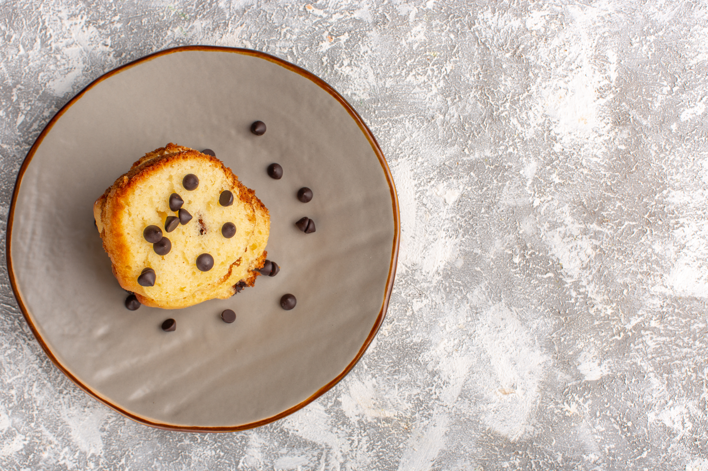

The Original Chocolate Chip Cookie Cake

Description
This is a dense cake with milk chocolate chips that makes a great snack. Kids love it.
Ingredients
- 2 1/4 cups all-purpose flour
- 1 teaspoon baking soda
- 1 teaspoon salt
- 1 cup butter, at room temperature
- 3/4 cup white sugar
- 3/4 cup white sugar
- 4 large eggs
- 1 teaspoon vanilla
- 2 cups milk chocolate chips (such as Guittard)
- 1 cup chopped pecans (Optional)
Steps
- Preheat oven to 375 degrees F (190 degrees C). Grease a 9x13-inch baking pan.
- Stir flour, baking soda, and salt together in a bowl.
- Beat butter, white sugar, and brown sugar together in a bowl with an electric mixer until light and fluffy, 3 to 5 minutes. Beat eggs and vanilla into butter mixture until smooth.
- Gradually stir flour mixture into butter mixture until just combined.
- Stir in chocolate chips and nuts. Spread cookie dough into the prepared pan.
- Bake in the preheated oven until golden and the cake springs back when lightly pressed, 20 to 25 minutes. Cool before cutting into 2-inch squares.
Home